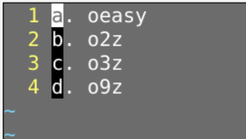

oeasy.txt
qa0W~hjq
查看宏
:reg a@a99@a:normal @a:2,4 normal @agg 回到最初qAkA.<Esc>jqqA追加录制宏到a寄存器k 是为了抵消上面的 jA追加在本行最后.写一个.<Esc> 退回到正常模式j 向下一行q 退出录制:reg a看到0W~hjkA.<esc>j:% normal @a:reg a0W~hjkA.<esc>j 中jk彼此抵消0W~A.<esc>j"ay$:reg a:% normal @a- 除了oeasy.txt之外
- 还有o2z.txt、o3z.txt
- :!cp oeasy.txt o2z.txt
- :!cp oeasy.txt o3z.txt
- 批量执行
- :arga *.txt
- 添加当前文件夹下的所有txt文档
- :args
- 列出所有参数
- :argdo g/.*/normal @a
- 对于args中的每个文件中的每一行执行a这个宏
- g global全局执行
- 匹配任何字符匹配每一行.*
- 如果是o.*对应的是以o开头的每一行
- normal @a 正常模式下执行@a
- :argdo w
- 保存所有文件修改
@@ :2,5@ oeasy.txtqaqqa0W~j@aq
然后运行
运行宏
这个时候可以并发执行
:1,$ normal @a